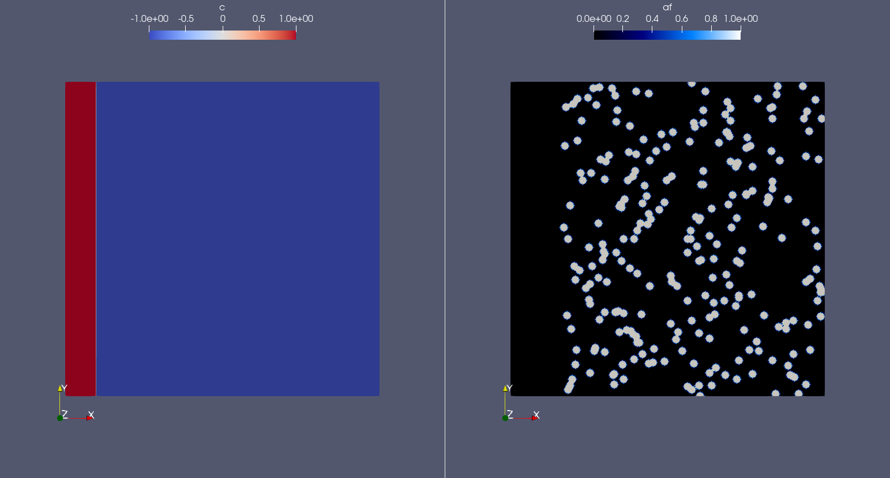

Note
Click here to download the full example code
Angiogenesis
In this demo we will reproduce the angiogenesis phase field model described by Travasso et al. in 2011 [TPoireC+11]. In this implementation, we will simulate a set of discrete cells expressing a generic angiogenic factor (e.g. VEGF), which lead to the sprouting of a 2D vascular network. In the following, we will refer to these cells as source cells, since are the only source of angiogenic factor in this model.
Table of Contents
How to run this example on Mocafe
Make sure you have FEniCS and Mocafe installed and download the source script of this page (see above for the link).
Then, download the parameters file for the simulation from
this link and place it inside the folder
demo_in/angiogenesis_2d:
mkdir demo_in
mkdir demo_in/angiogenesis_2d
mv parameters.ods demo_in/angiogenesis_2d/
Then, simply run it using python:
python3 angiogenesis_2d.py
However, it is recommended to exploit parallelization to save simulation time:
mpirun -n 4 python3 angiogenesis_2d.py
Notice that the number following the -n option is the number of MPI processes you using for parallelize the
simulation. You can change it accordingly with your CPU.
Visualize the results of this simulation
You need to have Paraview to visualize the results. Once you have installed it,
you can easly import the .xdmf files generated during the simulation and visualize the result.
Brief introduction to the mathematical model
The model is composed of two main parts interacting together: a set of differential equation and a computational “agent-based” model. The first part takes into account the continuous dynamics of the angiogenic factor and of the capillaries field, while the latter is responsible for the discrete dynamics of the source cells (i.e. the cells expressing a generic angiogenic factor, such as VEGF) and of the tip cells (i.e. the cells of endothelial origin which lead the sprouting of the new vessels). A complete discussion of this model is above the purpose of this demo so, if you’re interested, we suggest you to refer to the original paper [TPoireC+11]. However, in the following we provide you a short introduction for your convenience.
Differential equations
The mathematical part is just composed of two partial differential equations (PDEs). The first PDE is for the angiogenic factor (\(af\)) and takes into account: a. its diffusion; b. its consumption by the endothelial capillary cells (the field c). The equation reads:
Where the first part of the right-hand term comes from the Fick’s low of diffusion [Wikipediacontributors21], while the second term is a decrease driven by the c field.
The second PDE describes the dynamics of the capillaries, which are represented by a field \(c\) of extreme values -1 and +1, where high values represent a part of the domain where the capillary is present, while the low values represent the parts of the domain where the capillaries are not present. The equation reads:
Again, we have two terms composing the right-hand side of the equation: the first term is a Cahn-Hillard term, which is responsible for the interface dynamics of the field; the second just represents the proliferation of endothelial cells, which is driven by the angiogenic factor \(af\). This dependence, however, is not linear: the proliferation rate \(alpha_p(af)\) grows linearly with af only up to a certain value of \(af\), limiting the growth of endothelial cells:
Also notice that the last PDE is of total degree 4, which makes the equation not solvable using the finite element method (FEM) with standard first-degree elements. For this reason, as we will show below, in this implementation the equation is actually splitted into two equations of degree 2, introducing an auxilliary variable \(\mu\):
Computational “agent-based” model
In this implementation only two discrete cell populations are considered: the source cells and the tip cells.
The source cells are the cells expressing the angiogenic factor. They represent hypoxic cells starving for nutrients and thus inducing the angiogenesis to survive. In practice, these are implemented as simple circles, relatively far from the original vessel, where the angiogenic factor concentration is constantly equal to \(af_s\) (which is 1 in the present implementation). Moreover, to simulate the dependency of the hypoxic signalling on the local oxygen concentration, the source cells stop expressing the angiogenic factor when the capillaries are sufficiently near.
The tip cells have a more complex behaviour, since at each time step of the simulation they can activate, deactivate, and move in the spatial domain. The activation of a tip cell can occur only inside an existent capillary, and it happens only if \(af\) and the norm of its gradient \(|\nabla af|\), are above the thresholds \(af_c\) and \(G_m\), respectively. Moreover, only points distant more than 4 times the radius of another tip cell can become a new tip cell. This limit was introduced to consider the self-inhibition in the tip cells activation caused by the Notch pathway. In case more than one point respect all these conditions at the same time step, one of them is selected randomly and only that point will be used to create a new tip cell. Thus, at each time step, no more than one new tip cell can activate.
Once a tip cell is active, it moves inside the domain following the gradient of the angiogenic factor. The velocity vector is indeed computed as follows:
Notice that the velocity cannot be higher in norm than \(\chi G_M\). Once a tip cell moved, the capillaries phase field \(c\) is updated, adding a circle in the position of the tip cell with a constant value:
Where \(R_c\) is the radius of the tip cell. Notice that this is one of the key elements of the model, because it merges the continuous dynamics of the field \(c\) with the discrete dynamics of the tip cells.
Finally, according to the original model, the tip cells deactivate when :math`af` or the norm of its gradient drop below the above-mentioned thresholds values. In the Mocafe implementation, however, we added a small change first introduced by Moreira-Soares et al. (2018) [MSCR+18], and the tip cells deactivate also due to Notch-Signalling inhibition if they are close to each other.
Implementation
Setup
With Mocafe, the implementation of the model is not very different from any other FEniCS script. Let’s start importing everything we need:
import sys
import fenics
import mshr
from tqdm import tqdm
from pathlib import Path
import mocafe.fenut.fenut as fu
import mocafe.fenut.mansimdata as mansimd
from mocafe.angie import af_sourcing, tipcells
from mocafe.angie.forms import angiogenesis_form, angiogenic_factor_form
import mocafe.fenut.parameters as mpar
Then, as seen in previous examples, we initialize the MPI _comm, the process root, the log level and the data folder
comm = fenics.MPI.comm_world
rank = comm.Get_rank()
# only process 0 logs
fenics.parameters["std_out_all_processes"] = False
# set log level ERROR
fenics.set_log_level(fenics.LogLevel.ERROR)
# define data folder
file_folder = Path(__file__).parent.resolve()
data_folder = mansimd.setup_data_folder(folder_path=f"{file_folder/Path('demo_out')}/angiogenesis_2d",
auto_enumerate=None)
Then we initialize the xdmf files for the capillaries and the angiogenic factor. Notice that we also initialize a file for the tip cells, since is often useful to visualize how tip cells behave during the simulation. However, this is just for visualization purposes and it is not necessary for the model because, as we already mentioned above, the tip cells dynamics is merged to the capillaries dynamics thorugh the update of the field \(c\).
file_names = ["c", "af", "tipcells"]
file_c, file_af, tipcells_xdmf = fu.setup_xdmf_files(file_names, data_folder)
Finally, we need the parameters of the model. This time we exploit one of the functions of Mocafe to retrieve them from an ods sheet:
file_folder = Path(__file__).parent.resolve()
parameters_file = file_folder/Path("demo_in/angiogenesis_2d/parameters.ods")
parameters = mpar.from_ods_sheet(parameters_file, "SimParams")
Notice that it is often useful to keep the parameters separated from the script and then import them as shown above. This makes easier to save additional information together with the parameters (such as the unit of measure, the reference for the value, etc.); moreover, it reduces the risk of making mistakes in the revisions of the script.
Mesh definition
Again, to simulate our system we need to define the space where the simulation takes place and the function space to approximate our solution.
The mesh is a square of side Lx = Ly = 375 \(\mu m\), divided in nx = ny = 300 points for each side.
These values are stored inside the parameters ods file, and in the following we retrieve them and use them to
initialize a FEniCS RectangleMesh:
Lx = parameters.get_value("Lx")
Ly = parameters.get_value("Ly")
nx = int(parameters.get_value("nx"))
ny = int(parameters.get_value("ny"))
mesh = fenics.RectangleMesh(fenics.Point(0., 0.),
fenics.Point(Lx, Ly),
nx,
ny)
Spatial discretization
Then, we initialize the function space as follows:
# define function space for c and af
function_space = fu.get_mixed_function_space(mesh, 3, "CG", 1)
# define function space for grad_T
grad_af_function_space = fenics.VectorFunctionSpace(mesh, "CG", 1)
Notice that the function space for c and af is actually composed of 3 subspaces, since we also need to count the
above-mentioned auxiliary variable \(\mu\), that we will introduce soon. Also, notice that, since the gradient
of \(af\) is a vector, we need a different function space to handle it, called VectorFunctionSpace.
Initial & boundary conditions
Since the model is a system of PDEs, we need both initial and boundary conditions to find a unique solution.
In this implementation we will consider natural Neumann boundary conditions for both \(c\) and \(af\), which means that the derivative in space of the two fields is zero along the entire boundary. This is an easy pick for FEniCS, since it will automatically apply this condition for us without requiring any command from the user.
The initial condition for \(c\), according to the simulations reported in the original paper, is a single vessel
in the left part of the domain. The initial vessel width is 37,5 \(\mu m\) and its value is stored in the
parameters .ods file, so we retrieve it as follows:
initial_vessel_width = parameters.get_value("initial_vessel_width")
Thus, the initial condition for c is simply a function which is 1 in the left part of the domain, for the x
coordinate included in [0, 37.5], and -1 otherwise. We can simply define such a function using the FEniCS interface
for expressions as follows:
c_0_exp = fenics.Expression("(x[0] < i_v_w) ? 1 : -1",
degree=2,
i_v_w=initial_vessel_width)
c_0 = fenics.interpolate(c_0_exp, function_space.sub(0).collapse())
Together with the initial condition for c, we need to define an initial condition for mu. However, this can be simply 0 across all the domain and can be easily defined as follows:
mu_0 = fenics.interpolate(fenics.Constant(0.), function_space.sub(0).collapse())
Finally, we need to define an initial condition of the angiogenic factor \(af\). According to the original paper, initially \(af\) is 0 everywhere, except for the points inside the source cells where the value is \(af_s\). Thus, we need to define first the source cells if we want to set up the initial condition for the angiogenic factor.
In the original paper, the source cells where placed randomly in the right part of the domain, relatively far from the initial vessel. Creating this set up in Mocafe is relatively easy. We start by defining the number of source cells we want, which we stored in the parameters file:
n_sources = int(parameters.get_value("n_sources"))
Then, we define the part of the domain where we want the source cells to be placed; in this case, it is a rectangle including all the mesh except the initial vessel and a part of width \(d\):
random_sources_domain = mshr.Rectangle(fenics.Point(initial_vessel_width + parameters.get_value("d"), 0),
fenics.Point(Lx, Ly))
Finally, we initialize a so called RandomSourceMap, which will create the source cells for us:
sources_map = af_sourcing.RandomSourceMap(mesh,
n_sources,
parameters,
where=random_sources_domain)
A SourceMap is a Mocafe object which contains the position of all the source cells at a given time throughout
the entire simulation. As you can see, you just need to input the mesh, the parameters, the number of sources
and where you want the sources to be placed. In this implementation, we defined the part of the domain where we
needed the source cell as mshr.Rectangle, but the where argument can take as input also a function which
return a boolean for each point of the domain (True if the point can host a source cell, False otherwise).
For instance we could have initialized the same source map as above simply doing:
sources_map = af_sourcing.RandomSourceMap(mesh,
n_sources,
parameters,
where=lambda x: x[0] > initial_vessel_width + parameters.get_value("d"))
However, the source map is not sufficient to define the initial condition we need. To do so, we need an additional
Mocafe object, a SourcesManager:
sources_manager = af_sourcing.SourcesManager(sources_map, mesh, parameters)
As the name suggests, a SourcesManager is an object responsible for the actual management of the sources in the
given source map. One of the function it provides is exactly what we need, that is to apply the sources to a given
FEniCS function. Thus, to define the initial condition we need, is sufficient to define a function which is zero
everywhere:
af_0 = fenics.interpolate(fenics.Constant(0.), function_space.sub(0).collapse())
And to call the method apply_sources on it, which will take care of modifying the value of the function in
the points inside the source cells.
sources_manager.apply_sources(af_0)
Finally, we can save the initial conditions to the xdmf files defined above:
file_af.write(af_0, 0)
file_c.write(c_0, 0)
Visualizing the field that we just defined with Paraview, what we get is exactly what we expect: an initial vessel on the left side of the domain and a set of randomly distributed source cells:
{kind=link}
Weak form definition
After having defined the initial conditions for the system, we continue with the definition of the system itself. As usual, we define the test functions necessary for computing the solution with the finite element method:
v1, v2, v3 = fenics.TestFunctions(function_space)
Then, we define the three functions involved in the PDE system: \(c\), \(\mu\), and \(af\):
u = fenics.Function(function_space)
af, c, mu = fenics.split(u)
Moreover, we define two additional functions: one for the gradient of the angiogenic factor and one for the tip cells. Again, remember that the latter is defined just for visualization purposes and is not necessary for the simulation.
grad_af = fenics.Function(grad_af_function_space)
tipcells_field = fenics.Function(function_space.sub(0).collapse())
Then, since we have already defined the initial condition for \(af\), we can already compute its gradient and
assign it to the variable defined above. Notice that this is quite simple in FEniCS, because it just requires to call
the method grad on the function and to project it in the function space:
grad_af.assign( # assign to grad_af
fenics.project(fenics.grad(af_0), grad_af_function_space) # the projection on the fun space of grad(af_0)
)
Finally, we proceed to the definition of the weak from for the system. As in the case of the prostate cancer, one could define the weak form using the FEniCS UFL, but for your convenience we already defined it for you and we wrapped the form in two methods: one for the angiogenic factor equation:
form_af = angiogenic_factor_form(af, af_0, c, v1, parameters)
and one for the \(c\) field equation:
form_ang = angiogenesis_form(c, c_0, mu, mu_0, v2, v3, af, parameters)
which can be composed together simply summing them, as follows:
weak_form = form_af + form_ang
Simulation setup
Now that everything is set up we can proceed to the actual simulation, which will be different from the one defined for the prostate cancer model because it will require us to handle the source cells and the tip cells.
Just as for the source cells we defined a SourceCellsManager, for the tip cells we need to define a
TipCellsManager, which will take care of the job of activating, deactivating and moving the tip cells.
We initialize it simply calling:
tip_cell_manager = tipcells.TipCellManager(mesh,
parameters)
And then we will use iteratively in the time simulation for our needs. Notice that the rules for activating, deactivating and moving the tip cells are already implemented in the object class and all we need to do is passing the mesh and the simulation parameters to the constructor.
Then, we can proceed similarly to any other simulation, defining the Jacobian for the weak form:
jacobian = fenics.derivative(weak_form, u)
And initializing the time iteration
t = 0.
n_steps = int(parameters.get_value("n_steps"))
tqdm_file = sys.stdout if rank == 0 else None
tqdm_disable = (rank != 0)
Now, we can start iterating
for step in tqdm(range(1, n_steps + 1), ncols=100, desc="angiogenesis_2d", file=tqdm_file, disable=tqdm_disable):
# update time
t += parameters.get_value("dt")
# turn off near sources
sources_manager.remove_sources_near_vessels(c_0)
# activate tip cell
tip_cell_manager.activate_tip_cell(c_0, af_0, grad_af, step)
# revert tip cells
tip_cell_manager.revert_tip_cells(af_0, grad_af)
# move tip cells
tip_cell_manager.move_tip_cells(c_0, af_0, grad_af)
# get tip cells field
tipcells_field.assign(tip_cell_manager.get_latest_tip_cell_function())
# update fields
fenics.solve(weak_form == 0, u, J=jacobian)
# assign u to the initial conditions functions
fenics.assign([af_0, c_0, mu_0], u)
# update source field
sources_manager.apply_sources(af_0)
# compute grad_T
grad_af.assign(fenics.project(fenics.grad(af_0), grad_af_function_space))
# save data
file_af.write(af_0, t)
file_c.write(c_0, t)
tipcells_xdmf.write(tipcells_field, t)
Notice that additionally to the system solution a number of operations are performed at each time stem which require a bit of clarification. Let’s see the code step by step then.
The first thing we did just after the time update is removing the sources near the vessels, calling:
sources_manager.remove_sources_near_vessels(c_0)
With this single line, we are asking the sources manager to check the field c_0, which represent the vessels,
and to remove all the source cells the center of which is closer than the distance \(d\). Notice that we don’t
pass the distance as argument of the method because it’s already contained in the parameters file we passed to the
object constructor, but we could also pass it in the method through the ‘d’ key:
sources_manager.remove_sources_near_vessels(c_0, d=given_value)
The second thing we did is to handle the tip cells using the three statements:
# activate tip cell
tip_cell_manager.activate_tip_cell(c_0, af_0, grad_af, step)
# revert tip cells
tip_cell_manager.revert_tip_cells(af_0, grad_af)
# move tip cells
tip_cell_manager.move_tip_cells(c_0, af_0, grad_af)
Which respectively activate, deactivate and move the tip cells according to the algorithm we briefly discussed in the section Brief introduction to the mathematical model and that is extensively explained in the original paper :cite`Travasso2011a`. Notice that, similarly to the methods before, all the default threshold values do not need to be passed in the methods because they are already defined in the parameters file. Also notice that, in case there are no active tip cells in the current time step, the second and the third statement have no effect.
Then, we save the current tip cells in the above-defined tip cells field for visualizing them, using the method
get_latest_tip_cell_function():
tipcells_field.assign(tip_cell_manager.get_latest_tip_cell_function())
After having took care of all these things, we simply solve the PDE model and assign the computed values of the
solution to the c_0, mu_0 and af_0 fields, in order to have them as initial condition for the next
step:
fenics.solve(weak_form == 0, u, J=jacobian)
# assign u to the initial conditions functions
fenics.assign([af_0, c_0, mu_0], u)
Finally, we apply the remaining sources to the new af_0 function:
# update source field
sources_manager.apply_sources(af_0)
we compute the new value for the gradient of af:
grad_af.assign(fenics.project(fenics.grad(af_0), grad_af_function_space))
we write everything on the .xdmf files:
# save data
file_af.write(af_0, t)
file_c.write(c_0, t)
tipcells_xdmf.write(tipcells_field, t)
and we update the progress bar, in order to inform the user on the progress of the simulation.
if _rank == 0:
pbar.update(1)
Result
We uploaded on Youtube the result on this simulation. You can check it out below or at this link
Visualize the result with ParaView
The result of the simulation is stored in the .xdmf file generated, which are easy to load and visualize in
expernal softwares as ParaView. If you don’t now how to do it, you can check out the tutorial below or at
this Youtube link.
Full code
import fenics
import mshr
from tqdm import tqdm
from pathlib import Path
import mocafe.fenut.fenut as fu
import mocafe.fenut.mansimdata as mansimd
from mocafe.angie import af_sourcing, tipcells
from mocafe.angie.forms import angiogenesis_form, angiogenic_factor_form
import mocafe.fenut.parameters as mpar
# MPI
_comm = fenics.MPI.comm_world
_rank = _comm.Get_rank()
# only process 0 logs
fenics.parameters["std_out_all_processes"] = False
# set log level ERROR
fenics.set_log_level(fenics.LogLevel.ERROR)
# define data folder
file_folder = Path(__file__).parent.resolve()
data_folder = mansimd.setup_data_folder(folder_path=f"{file_folder / Path('demo_out')}/angiogenesis_2d",
auto_enumerate=None)
file_names = ["c", "af", "tipcells"]
file_c, file_af, tipcells_xdmf = fu.setup_xdmf_files(file_names, data_folder)
file_folder = Path(__file__).parent.resolve()
parameters_file = file_folder / Path("demo_in/angiogenesis_2d/parameters.ods")
parameters = mpar.from_ods_sheet(parameters_file, "SimParams")
# Mesh definition
Lx = parameters.get_value("Lx")
Ly = parameters.get_value("Ly")
nx = int(parameters.get_value("nx"))
ny = int(parameters.get_value("ny"))
mesh = fenics.RectangleMesh(fenics.Point(0., 0.),
fenics.Point(Lx, Ly),
nx,
ny)
# Spatial discretization
# define function space for c and af
function_space = fu.get_mixed_function_space(mesh, 3, "CG", 1)
# define function space for grad_T
grad_af_function_space = fenics.VectorFunctionSpace(mesh, "CG", 1)
# Initial conditions
initial_vessel_width = parameters.get_value("initial_vessel_width")
c_0_exp = fenics.Expression("(x[0] < i_v_w) ? 1 : -1",
degree=2,
i_v_w=initial_vessel_width)
c_0 = fenics.interpolate(c_0_exp, function_space.sub(0).collapse())
mu_0 = fenics.interpolate(fenics.Constant(0.), function_space.sub(0).collapse())
n_sources = int(parameters.get_value("n_sources"))
random_sources_domain = mshr.Rectangle(fenics.Point(initial_vessel_width + parameters.get_value("d"), 0),
fenics.Point(Lx, Ly))
sources_map = af_sourcing.RandomSourceMap(mesh,
n_sources,
parameters,
where=random_sources_domain)
sources_manager = af_sourcing.SourcesManager(sources_map, mesh, parameters)
af_0 = fenics.interpolate(fenics.Constant(0.), function_space.sub(0).collapse())
sources_manager.apply_sources(af_0)
file_af.write(af_0, 0)
file_c.write(c_0, 0)
# Weak form defintion
v1, v2, v3 = fenics.TestFunctions(function_space)
u = fenics.Function(function_space)
af, c, mu = fenics.split(u)
grad_af = fenics.Function(grad_af_function_space)
tipcells_field = fenics.Function(function_space.sub(0).collapse())
grad_af.assign( # assign to grad_af
fenics.project(fenics.grad(af_0), grad_af_function_space) # the projection on the fun space of grad(af_0)
)
form_af = angiogenic_factor_form(af, af_0, c, v1, parameters)
form_ang = angiogenesis_form(c, c_0, mu, mu_0, v2, v3, af, parameters)
weak_form = form_af + form_ang
# Solution
tip_cell_manager = tipcells.TipCellManager(mesh,
parameters)
jacobian = fenics.derivative(weak_form, u)
t = 0.
n_steps = int(parameters.get_value("n_steps"))
tqdm_file = sys.stdout if rank == 0 else None
tqdm_disable = (rank != 0)
# start iterating
for step in tqdm(range(1, n_steps + 1), ncols=100, desc="angiogenesis_2d", file=tqdm_file, disable=tqdm_disable):
# update time
t += parameters.get_value("dt")
# turn off near sources
sources_manager.remove_sources_near_vessels(c_0)
# activate tip cell
tip_cell_manager.activate_tip_cell(c_0, af_0, grad_af, step)
# revert tip cells
tip_cell_manager.revert_tip_cells(af_0, grad_af)
# move tip cells
tip_cell_manager.move_tip_cells(c_0, af_0, grad_af)
# get tip cells field
tipcells_field.assign(tip_cell_manager.get_latest_tip_cell_function())
# update fields
fenics.solve(weak_form == 0, u, J=jacobian)
# assign u to the initial conditions functions
fenics.assign([af_0, c_0, mu_0], u)
# update source field
sources_manager.apply_sources(af_0)
# compute grad_T
grad_af.assign(fenics.project(fenics.grad(af_0), grad_af_function_space))
# save data
file_af.write(af_0, t)
file_c.write(c_0, t)
tipcells_xdmf.write(tipcells_field, t)
Total running time of the script: ( 0 minutes 0.000 seconds)